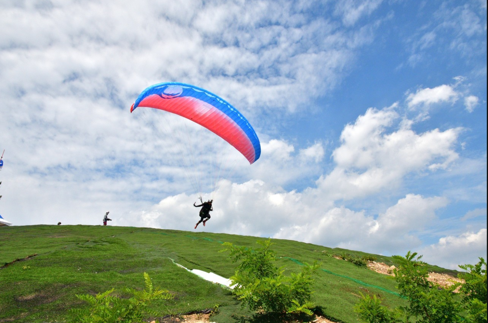
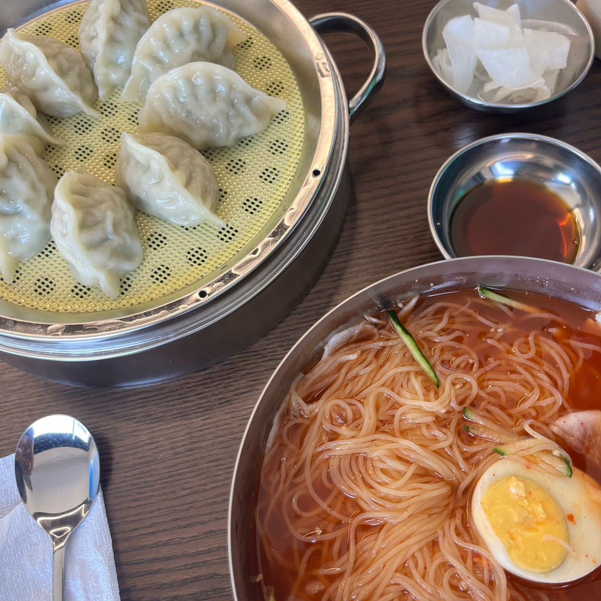
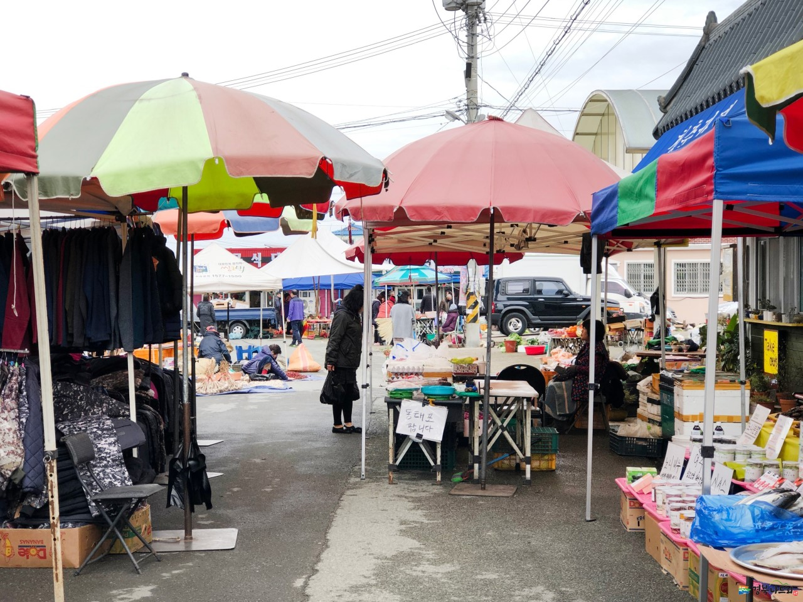

<< 액티비티 코스 >>
1. 패러글라이딩 - 하늘을 나는 짜릿함과 함께 웅장한 자연 경관을 한눈에 담을 수 있는 기회를 제공합니다. 높은 곳에서 바라보는 산과 바다 그리고 그 너머 펼쳐지는 풍경은 잊을 수 없는 경험을 선사합니다.
2. 오도리 면가 - 시원한 냉면과 깊은 맛의 바지락 칼국수로 유명한 곳입니다. 신선한 재료로 만들어진 면 요리는 간단하면서도 정성 가득한 맛을 자랑하며 여행 중간에 필요한 에너지를 보충해 줍니다.
3. 청하시장 - 대규모 시장과는 달리 작은 규모의 오일장이지만 그만큼 전통적인 매력을 지닌 곳입니다. 현지인들의 일상적인 삶이 묻어나는 이 시장에서 따뜻하고 소박한 분위기를 느낄 수 있습니다.
4. 서핑 - 바다에서만 경험할 수 있는 특별한 액티비티로, 파도를 타는 스릴을 즐길 수 있습니다. 파도 위에서 느끼는 자유로운 감각은 여행에서 기억에 남는 순간이 될 것입니다.